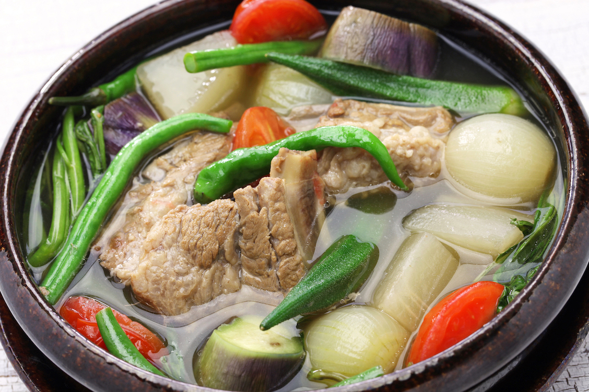

Nilaga

Description
If you're craving Filipino comfort food, cook a pot of nilagang baboy. This boiled pork soup is easy to make as long as you give it plenty of time to simmer.
For a soup full of texture, use pork spareribs and simmer it with corn, bok choy, and vegetables. If you prefer boneless pork, cut and sear cubes of pork shoulder or belly. Then cook the pork in broth along with fish sauce, green beans, and vegetables.
Ingredients:
1 pound (0.45 kg) of pork shoulder or belly, cut into 2 in cubes
2 tablespoons (30 ml) of vegetable oil
1 onion, chopped
2 cloves of garlic, minced
1 inch (2.5 cm) piece of fresh ginger
1 bunch of scallions, white portions sliced into 1 inch (2.5 cm) pieces
1 tablespoon (15 ml) of fish sauce
6 to 8 cups (1,400 to 1,900 ml) of chicken or vegetable broth
2 tomatoes, cut into quarters
2 potatoes, peeled and quartered
1 carrot, peeled and sliced
1 cup (150 g) of fresh green beans
2 cups (340 g) of coarsely chopped bok choy
1 teaspoon (5.5 g) of salt
1 teaspoon (2 g) of black pepper
Procedures:
- Sauté onion, garlic, ginger, and scallions for 7 to 8 minutes.
- Cut the pork into 2 inches (5.1 cm) cubes and add them to the pot.
- Add fish sauce and sear the pork cubes for 5 minutes.
- Stir in the broth and simmer the soup for 30 minutes.
- Add the tomatoes, potatoes, and carrot and simmer for 10 minutes.
- Stir in the green beans, bok choy, salt, and pepper.
- Simmer the nilagang baboy for 5 minutes and serve it immediately.